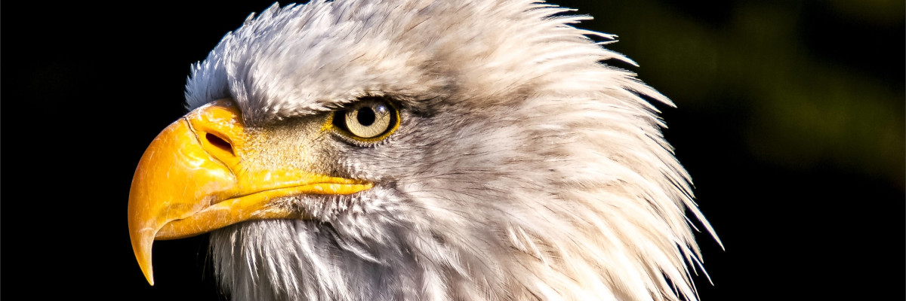
The website features photographs of animals from Pixabay.com. The key to animal photography is patience. It can take a long time to get the right lighting and best view of the animal. When photographing animals, you do not have a lot of control... you need to wait for them.
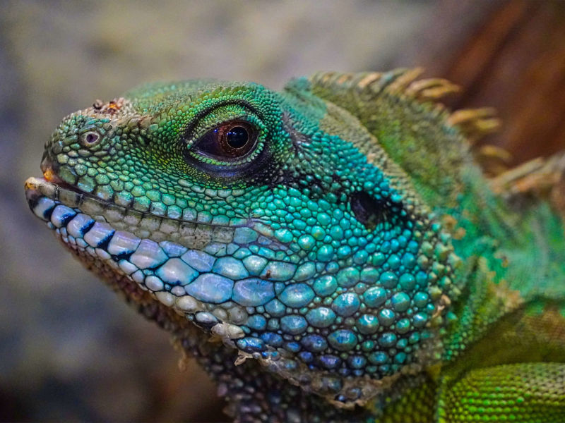
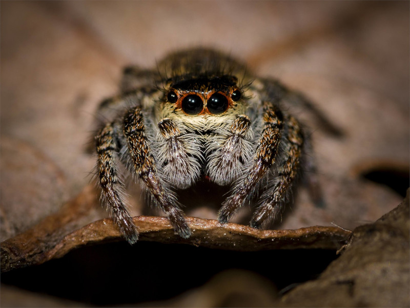
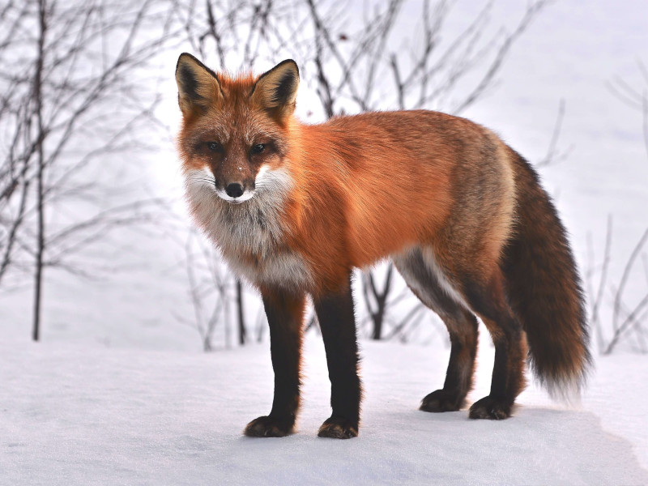
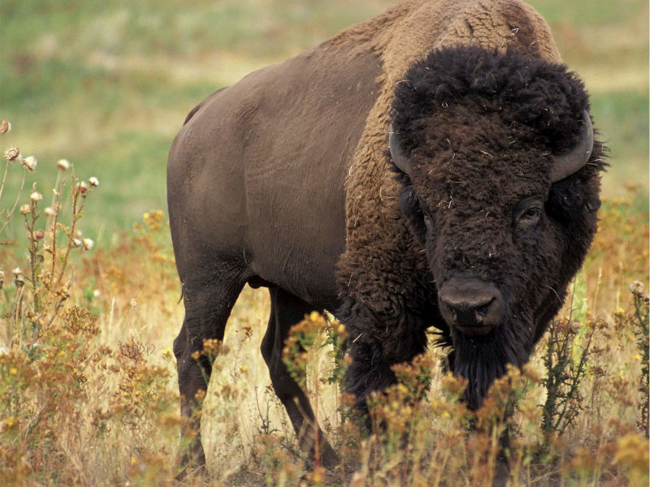
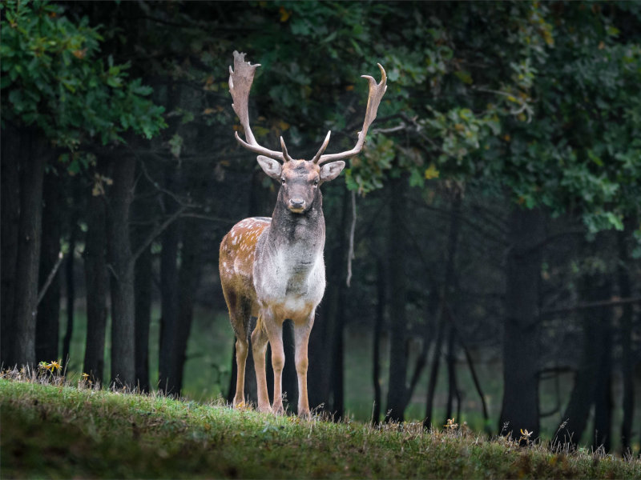
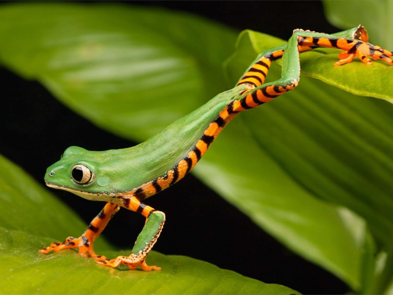
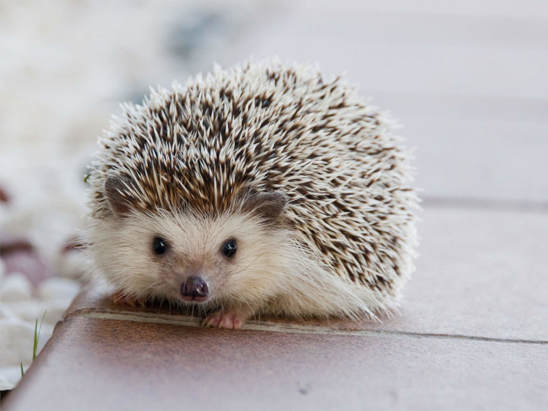
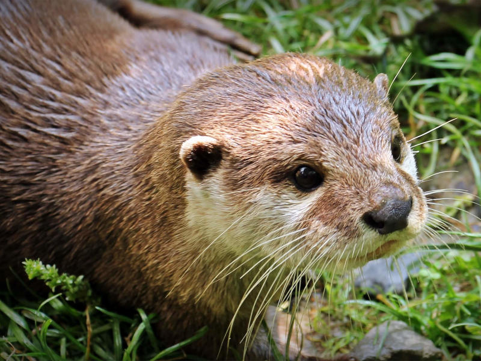
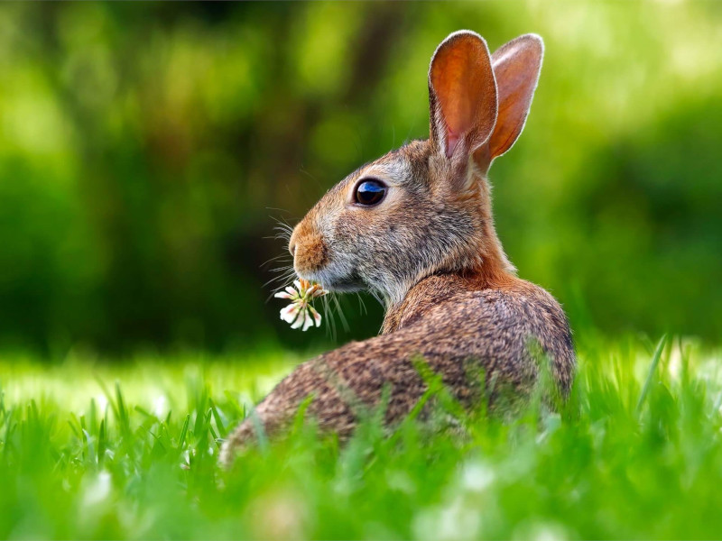
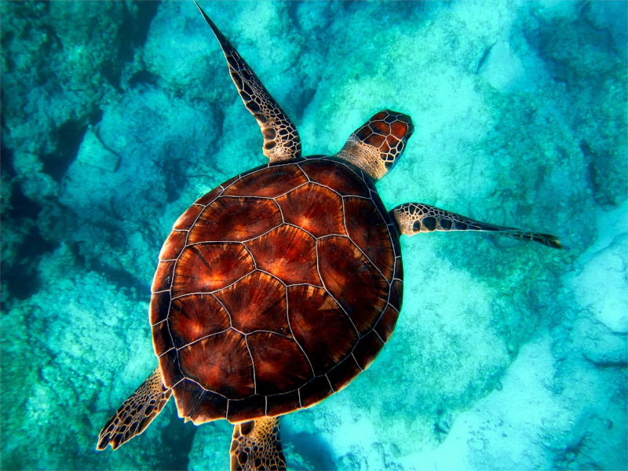
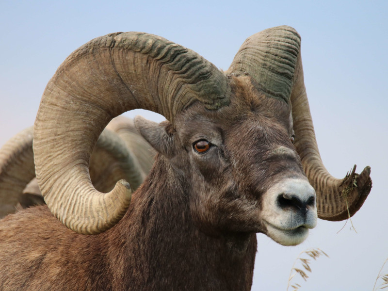